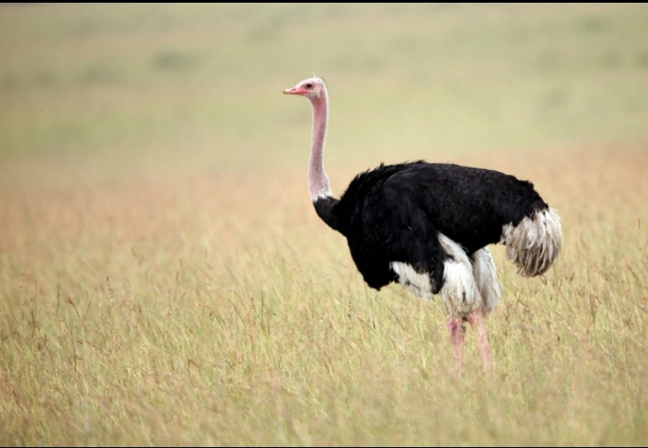

OSTRICH
Ostriches are large, flightless birds that have long legs and a long neck that protrudes from a round body. Males have bold black-and-white coloring that they use to attract females. Females, on the other hand, are light brown. ... The ostrich is the only bird that has two toes on each foot
WHERE DO WE FIND THEM ?
Ostrich, (Struthio camelus), large flightless bird found only in open country in Africa